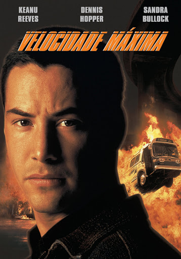
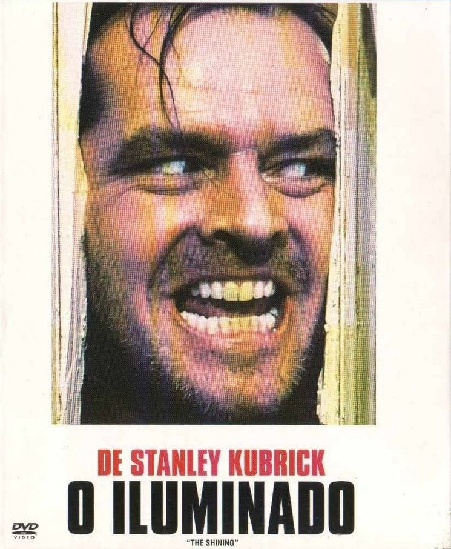
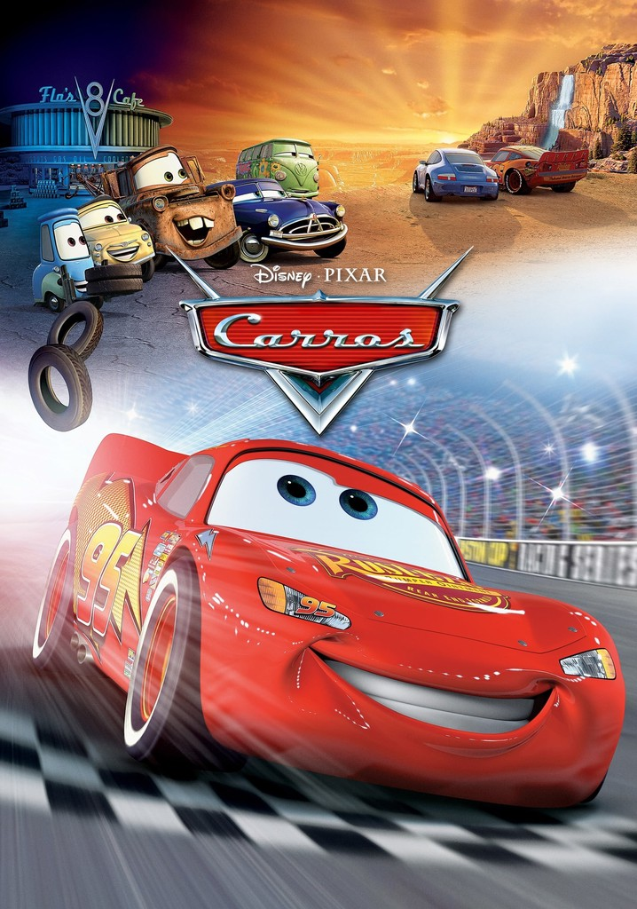
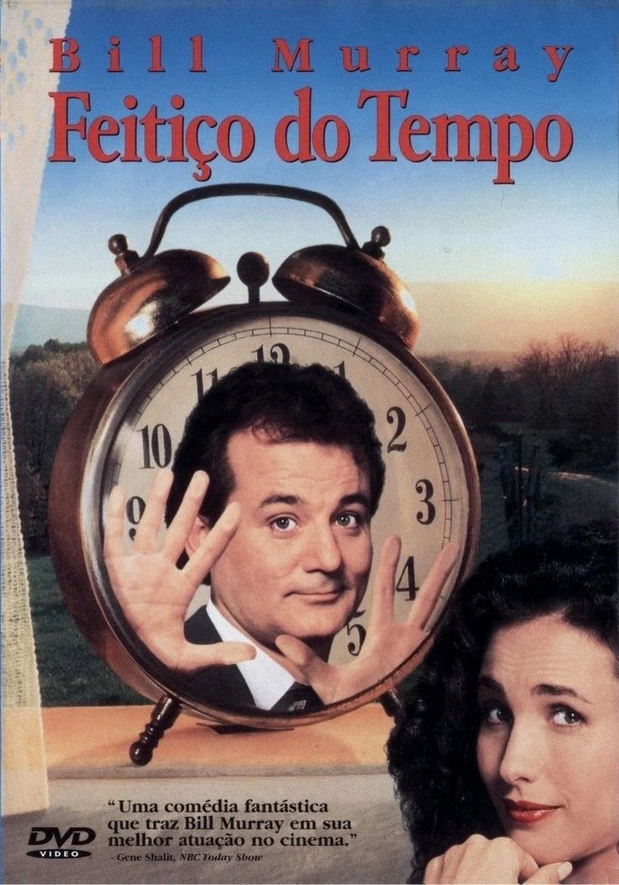

🎬Catálogo de Filmes
O exterminador (1984)
Um ciborgue assassino vindo do futuro é enviado para o passado com uma missão simples e brutal: matar Sarah Connor, uma mulher comum que, sem saber, será mãe do futuro líder da resistência humana contra as máquinas.
• Gênero: Ação/Ficção Científica
• Duração: 1h 47min
• Elenco: Arnold Schwarzenegger, Linda Hamilton, Michael Biehn
• Avaliação:⭐️⭐️⭐️⭐️ 4.8
Velocidade Máxima (1994)

Um policial disfarçado deve impedir que uma bomba exploda em um ônibus cheio de passageiros, mantendo a velocidade acima de 50 milhas por hora.
• Gênero: Ação/Thriller
• Duração: 1h 56min
• Elenco: Keanu Reeves, Sandra Bullock, Dennis Hopper
• Avaliação:⭐️⭐️⭐️⭐️ 4.6
O iluminado (1980)

Jack Torrance aceita trabalhar como zelador de inverno em um enorme hotel isolado nas montanhas. Ele leva a esposa Wendy e o filho Danny, que tem habilidades psíquicas estranhas.
• Gênero: Terror/Mistério
• Duração: 1h 29min
• Elenco: Jack Nicholson, Shelley Duvall, Danny Lloyd
• Avaliação:⭐️⭐️⭐️⭐️ 4.4
Clube da Luta (1999)

Um homem insatisfeito com sua vida monótona encontra alívio ao formar um clube de luta clandestino com um vendedor carismático.
• Gênero: Ação/Crime
• Duração: 2h 19min
• Elenco: Brad Pitt, Edward Norton, Helena Bonham Carter
• Avaliação:⭐️⭐️⭐️⭐️ 4.7
Senhor dos Anéis (2001)
Um jovem hobbit embarca em uma jornada épica para destruir um anel poderoso e salvar a Terra Média das forças do mal.
• Gênero: Fantasia/Aventura
• Duração: 2h 58min
• Elenco: Elijah Wood, Ian McKellen, Viggo Mortensen
• Avaliação:⭐️⭐️⭐️⭐️ 4.9
Carros (2006)

Um carro de corrida arrogante acaba em uma cidadezinha esquecida e aprende lições valiosas sobre amizade e humildade.
• Gênero: Animação/Aventura
• Duração: 1h 56min
• Elenco: Owen Wilson, Bonnie Hunt, Paul Newman
• Avaliação:⭐️⭐️⭐️⭐️ 4.3
O Clube dos cinco (1985)
Cinco estudantes do ensino médio, cada um de um grupo social diferente, são forçados a passar um sábado juntos na detenção escolar.
• Gênero: Drama/Comédia
• Duração: 1h 37min
• Elenco: Emilio Estevez, Molly Ringwald, Judd Nelson
• Avaliação:⭐️⭐️⭐️⭐️ 4.5
Feitiço do Tempo (1993)

Um meteorologista cínico fica preso em um loop temporal, revivendo o mesmo dia repetidamente, o Dia da Marmota.
• Gênero: Comédia/Fantasia
• Duração: 1h 41min
• Elenco: Bill Murray, Andie MacDowell, Chris Elliott
• Avaliação:⭐️⭐️⭐️⭐️ 4.6
Hallowen (1978)
Um assassino mascarado escapa de um hospital psiquiátrico e retorna à sua cidade natal para aterrorizar uma jovem babá e seus amigos.
• Gênero: Terror/Suspense
• Duração: 1h 31min
• Elenco: Jamie Lee Curtis, Donald Pleasence, Nancy Kyes
• Avaliação:⭐️⭐️⭐️⭐️ 4.4
Sexta-Feira 13 (1980)
Um grupo de conselheiros de acampamento é aterrorizado por um assassino desconhecido enquanto tenta reabrir um acampamento fechado.
• Gênero: Terror/Suspense
• Duração: 1h 31min
• Elenco: Betsy Palmer, Adrienne King, Harry Crosby
• Avaliação:⭐️⭐️⭐️⭐️ 4.3
A casa do pesadelo (2013)
Uma família se muda para uma casa antiga, apenas para descobrir que está assombrada por espíritos malignos que ameaçam sua sanidade e segurança.
• Gênero:Terror/Suspense
• Duração: 1h 35min
• Elenco: Renai Baxter, Marc Blucas, Fionnula Flanagan
• Avaliação:⭐️⭐️⭐️⭐️ 4.1
Sombras da meia noite (2020)
Um grupo de amigos enfrenta eventos sobrenaturais aterrorizantes após descobrir um antigo livro em uma cabana isolada na floresta.
• Gênero: Terror/Suspense
• Duração: 1h 40min
• Elenco: Jane Doe, John Smith, Alice Johnson
• Avaliação:⭐️⭐️⭐️⭐️ 4.2